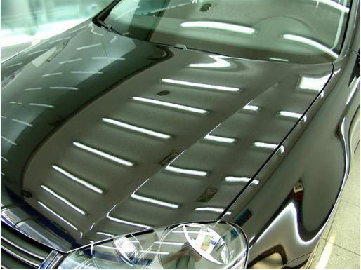

Полировка жидким стеклом названа так потому, что внешне на автомобиле она выглядит как стекло. На ощупь такая полироль также напоминает стекло, а из-за своей формулы она делает цвет машины в несколько раз насыщенней, но также и выявляет дефекты, поэтому такая полировка автомобиля рекомендуется только после проведения восстановительной полировки. Если же дефекты незначительны, типа микротрещин и едва заметных царапин, то полировка жидким стеклом уберёт их.
Полировка жидким стеклом обладает рекордной стойкостью и долговечностью. Она держится до года и отлично защищает кузов от агрессивных веществ и среды, например от химических реагентов, рассыпаемых зимой на дорогах, а летом от кислотных дождей. Полировка авто жидким стеклом также даёт лакокрасочному покрытию хорошую водоотталкиваемость, что позволяет снизить частоту мытья машины, так как дождь будет соскальзывать с кузова, а не оставаться на нём и не оставлять разводы. Это обстоятельство также увеличивает число моек, которые авто может пройти без дополнительной полировки. После полировки жидким стеклом автомобиль «консервируется», сохраняя на долгий срок яркость своей краски, потому что полироль защищает краску от выгорания, обеспечивая при этом стопроцентную защиту от всех негативных эффектов.
Достать такую полироль не так просто, а высокие требования к навыкам работы резко снижают шансы на проведение полировки своими руками. Полировка кузова автомобиля жидким стеклом будет во много раз лучше, если её выполнят квалифицированные специалисты, которых можно найти в любом автосервисе.
Наномойка Антидождь Инновационный автошампунь Полировка «Жидкое стекло»